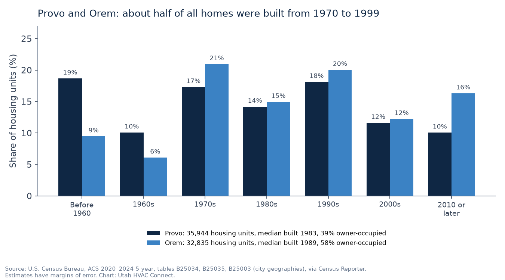

TL;DR
- Provo (35,944 housing units, median built 1983) and Orem (32,835, median 1989): about half of homes in both cities were built from 1970 through 1999 (ACS 2020–2024).
- The big local difference is the electric utility. Provo has its own city utility, Provo Power, while Orem is on Rocky Mountain Power. Wattsmart heat pump rebates need Rocky Mountain Power; Provo lists its own ($1,000 ducted, $500 ductless heat pump, with disposal of the old gas unit).
- Both cities use Enbridge Gas, so ThermWise furnace ($300–$350) and dual-fuel ($700–$1,200) rebates apply, as listed October 26, 2026.
- Provo BYU averages about 4,968 heating degree days a year and a 23.8°F January low (NOAA 1991–2020).
- Permits: Provo lists a building permit plus an Equipment Installation Guide for furnace and AC work; Orem’s list includes HVAC installs and replacements. Free request; matching depends on shops that serve your ZIP.
Provo and Orem sit side by side on the east shore of Utah Lake, and together they hold about 68,800 housing units (ACS 2020–2024). For HVAC, the biggest local difference between them isn’t the weather or the age of the homes. It’s the electric utility: Provo runs its own city power system, and Orem is served by Rocky Mountain Power. That decides which heat pump rebates you can use. This page collects the local facts we could source: housing data, winter weather, utilities and rebates, and where permits come from.
Utah HVAC Connect is a matchmaker under Apex Lead Group, LLC. We connect homeowners with licensed Utah HVAC contractors; we’re not a contractor, and we don’t dispatch, diagnose, or quote. We don’t name or vouch for any particular shop on this page, and we can’t promise a match in every ZIP: matching depends on licensed shops that serve your ZIP.
Housing data

About half of all homes in both cities were built from 1970 through 1999 (50% in Provo, 56% in Orem). Provo has more older housing: 29% of its units predate 1970, versus 16% in Orem. Orem has more recent building: 16% of its units date from 2010 or later, versus 10% in Provo. Ownership differs too. About 39% of occupied homes in Provo are owner-occupied, compared with 58% in Orem, and only 38% of Provo’s housing units are single-family detached homes, versus 51% in Orem (ACS tables B25003, B25024).
| ZIP | Housing units | Median year built | Owner-occupied | Built 1970–99 | Built 2010 or later | Heat with utility gas | Heat with electricity |
|---|---|---|---|---|---|---|---|
| 84604 (north Provo) | 13,486 | 1981 | 48% | 56% | 7% | 75% | 20% |
| 84601 (central / west Provo) | 11,456 | 1988 | 48% | 48% | 13% | 75% | 20% |
| 84606 (south / east Provo) | 11,379 | 1982 | 22% | 43% | 11% | 69% | 29% |
| 84057 (north Orem) | 12,379 | 1987 | 63% | 62% | 10% | 78% | 20% |
| 84058 (south Orem) | 12,247 | 1992 | 42% | 52% | 21% | 74% | 24% |
| 84097 (east Orem) | 7,345 | 1984 | 71% | 55% | 15% | 81% | 16% |
Source: U.S. Census Bureau, ACS 2020–2024 5-year estimates for ZIP Code Tabulation Areas (tables B25034, B25035, B25003, B25040), via Census Reporter. Owner-occupied and heating fuel are shares of occupied homes; year built is of all housing units. ZIP labels are approximate. Estimates have margins of error.
Which ZIP am I in? City limits and ZIPs don’t line up exactly. By land area in the Census Bureau’s 2020 ZIP-to-place relationship file, most of Provo is in 84604, 84601, and 84606 (84602 is the BYU campus), and Orem is split almost evenly among 84057, 84058, and 84097, with small parts in 84059 and 84604 (Census relationship file). Enter your own ZIP on the form.
What the numbers suggest
General context, not a diagnosis of your system:
- Homes from the 1970s through the 1990s: most are likely on at least their second furnace, and many on a second or third AC. If yours is being replaced again, the questions are about what the last replacement left behind: venting, sizing, and ducts. Our guide to replacing the furnace in a 1970s–80s home walks through them, and the furnace replacement guide covers rebates and permits.
- Pre-1970 homes (29% of Provo’s units): older homes can have older ductwork and building materials, so ask a contractor to look before quoting a like-for-like swap. Some older Provo properties are also historic: see permits below.
- Electric heat is more common than in most of the valley: about 23% of occupied homes in Provo and 21% in Orem heat with electricity, versus about 11% to 14% in West Jordan’s ZIPs (ACS table B25040; West Jordan ZIPs). If your home has electric heat and you’re weighing an upgrade, see AC and heat pump replacement.
- If you rent: 61% of Provo’s occupied homes are renter-occupied. Check your lease and talk to your landlord or property manager before arranging HVAC work. Our request form is for the person who can approve the work.
If heat is out right now, start with no-heat help. If the furnace turns on and off in short bursts, see our short-cycling guide.
Heating and cooling season
NOAA’s 1991–2020 normals for the Provo BYU station show about 4,968 heating degree days a year, rising from 327 in October to 995 in December and 1,007 in January, with an average January low of 23.8°F. The same station averages about 1,205 cooling degree days a year (NOAA annual normals; monthly). That’s somewhat less heating demand than at the Salt Lake City airport (about 5,154), but a long furnace season all the same. NOAA has no normals station in Orem, so treat Provo BYU as a guide for both cities, not a reading for your street.
Utilities and rebates
- Provo electricity: Provo has its own city electric utility, Provo Power, which publishes its own residential rate schedules (Provo electric rates). The city’s building page sends electric-service questions to Provo Power (Provo Building).
- Orem electricity: Orem’s electric-service and demolition handouts direct homeowners to Rocky Mountain Power (Orem electric service changes; Orem demolition permit information).
- Gas in both cities: Enbridge Gas, named in Provo’s demolition steps and Orem’s demolition handout (Provo; Orem).
What that means for rebates, as listed on October 26, 2026:
- Gas (Enbridge Gas ThermWise), both cities: $300 for a 95%–97.4% AFUE gas furnace, $350 for 97.5% AFUE or higher with an ECM, and $700–$1,200 for qualifying dual-fuel heat pump systems; the rebate request must be postmarked within six months of installation (ThermWise).
- Orem (Rocky Mountain Power Wattsmart): $1,450 for an AHRI-rated dual-fuel heat pump system ($700 if not AHRI-rated), with a participating contractor, an existing single-family home, and an application within 180 days. Wattsmart requires that you buy your electricity from Rocky Mountain Power (Wattsmart).
- Provo (city rebate): because Provo Power customers don’t buy electricity from Rocky Mountain Power, Wattsmart’s rules don’t fit most Provo homes. Provo City instead lists electric-appliance rebates when you dispose of the old gas-powered equipment, including $1,000 for a ducted heat pump and $500 for a ductless heat pump (Provo City rebates). Confirm the details with the city (its page lists 801-852-6802) before you count on it. Check your bill to see which utility you have.
- Federal: the 25C tax credit isn’t allowed for equipment placed in service after December 31, 2025 (IRS).
A similar city-power split exists in Lehi; our Lehi City Power vs Rocky Mountain Power guide explains why the utility on your bill matters.
Permits
- Provo: the Building page lists the steps for a furnace (apply for a building permit and submit an Equipment Installation Guide) and for an air conditioner (a building permit, a site plan, and an Equipment Installation Guide). The State adopted the 2024 Utah Building Code on July 1, 2026, and the Building Division’s number is (801) 852-6428 (Provo Building). If your property is on the Provo Landmarks Register, the city requires a Landmarks Commission Certificate of Appropriateness for exterior alterations, including “any construction that requires a building permit.” If that’s your home, ask the city whether your HVAC job needs one, especially if equipment goes outside.
- Orem: the city’s “When do I need a building permit?” list includes “heating and air conditioning installations or replacements” (Orem permit list). Applications go through the city’s online portal (Orem building permits), and the same list says permits for some minor work, such as replacement furnaces, can normally be completed within one business day.
Most homeowners have the contractor pull the permit. Ask whether it’s included in the bid.
Check the license before work starts
Before anyone works on your system, look the company up on DOPL’s free Licensee Lookup & Verification. You want an Active status and an HVAC classification (H100, or the older S350), under the same business name that’s on your estimate. Step-by-step: how to check a Utah HVAC license.
How matching works
- Tell us what you need on the free Get Help form: service type (Repair, Replace, Install, Tune-up, or “I’m not sure”), urgency (Today, This week, or Planning), your ZIP, and when it’s reasonable to reach you.
- We match licensed Utah shops that serve your ZIP. We don’t dispatch technicians, diagnose, or write proposals.
- Matched pros may reach out using the contact details you provide. You talk with them, compare, and hire who you want, or no one. No homeowner fee and no obligation. More: how it works and how we make money.
Related guides
- Furnace not working? No-heat help in Utah: safety first, basic checks, and what to tell a shop
- AC and heat pump replacement in Utah: AC-only, dual fuel, or all-electric, plus rebates
- Furnace replacement in Utah: repair-or-replace questions, rebates, permits
- American Fork (84003): local data for the next cities north
- Lehi City Power vs Rocky Mountain Power: another city-power split
- Furnace short-cycling: what it means when the furnace turns on and off
- Saratoga Springs & Eagle Mountain: across Utah Lake
How we put this page together
This page was written by the Utah HVAC Connect editorial team, not by a contractor. We used public data only: NOAA 1991–2020 climate normals, U.S. Census Bureau American Community Survey (ACS) estimates, and the rebate, permit, and licensing pages published by Utah utilities, cities, and DOPL, each checked on the date shown above. For this page we pulled city- and ZIP-level housing data for Provo and Orem, checked how ZIPs line up with city limits using Census geography files, and read each city’s own building, utility, and rebate pages. We don’t publish prices we can’t source, contractors can’t pay to be mentioned here, and we don’t name partner shops on this page. Programs and rules change, so confirm details with the program or your contractor before you sign anything. See our editorial policy. Spot an error? Email hello@utahhvacconnect.com.
Sources
- U.S. Census Bureau, ACS 2020–2024 5-year, tables B25034, B25035, B25003, B25040, B25024, Provo and Orem cities and ZCTAs 84601, 84604, 84606, 84057, 84058, 84097, via Census Reporter API
- U.S. Census Bureau, ACS 2020–2024 5-year, ZCTAs 84081, 84084, 84088 (for comparison), via Census Reporter API
- U.S. Census Bureau, 2020 ZCTA-to-place relationship file
- NOAA NCEI, 1991–2020 annual normals, Provo BYU (USC00427064)
- NOAA NCEI, 1991–2020 monthly normals (heating degree days, average low), Provo BYU
- NOAA NCEI, 1991–2020 annual normals, Salt Lake City Intl Airport
- Provo City, Building (furnace, AC, demolition, and historic-property steps)
- Provo City, Electric tool and appliance rebate programs
- Provo City, Electric rates (Provo Power)
- City of Orem, Electric service changes (2025)
- City of Orem, Demolition permit information (2025)
- City of Orem, When do I need a building permit? (2026)
- City of Orem, Building permits
- Enbridge Gas, ThermWise appliance rebates
- Rocky Mountain Power, Wattsmart dual fuel heat pumps (UT)
- IRS, FAQs on 25C under Public Law 119-21
- Utah DOPL, Licensee Lookup & Verification
Questions about the service: hello@utahhvacconnect.com.
FAQ
Do you cover Provo and Orem?
You can send a free request from any Provo or Orem ZIP. Matching depends on licensed Utah HVAC shops that serve your ZIP, so we can’t promise a match for every address, and we don’t name or vouch for particular shops. If a match is made, those pros may reach out.
Who provides electricity in Provo and Orem?
Provo has its own city electric utility, Provo Power. Orem’s handouts point homeowners to Rocky Mountain Power. Both cities use Enbridge Gas for natural gas. Check your bill to be sure.
Can I get a Wattsmart heat pump rebate in Provo?
Wattsmart requires that you buy your electricity from Rocky Mountain Power, so it doesn’t fit Provo Power customers. Provo City lists its own heat pump rebates with disposal of the old gas equipment: $1,000 for a ducted heat pump and $500 for ductless, as of October 26, 2026. Confirm the conditions with the city.
Do I need a permit to replace a furnace or AC here?
Normally, yes. Provo lists a building permit plus an Equipment Installation Guide for a furnace, and a site plan as well for an air conditioner. Orem’s permit list includes heating and air conditioning installations or replacements. Your contractor usually pulls the permit.
Which ThermWise rebates apply?
Enbridge Gas ThermWise rebates apply in both cities: $300 for a 95%–97.4% AFUE furnace, $350 for 97.5% AFUE or higher with an ECM, and $700–$1,200 for qualifying dual-fuel systems, as listed on October 26, 2026.
Is the request free, and do you send the technician?
The request is free for homeowners with no obligation to hire. We don’t send technicians or quote; we’re a matchmaker that connects you with licensed Utah HVAC shops that serve your ZIP.